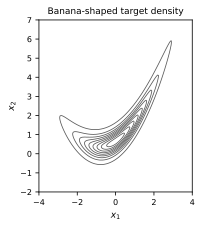
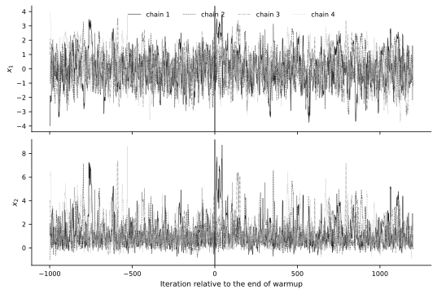
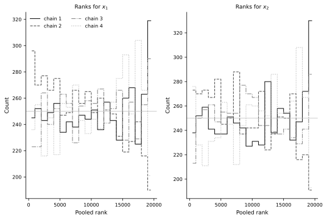
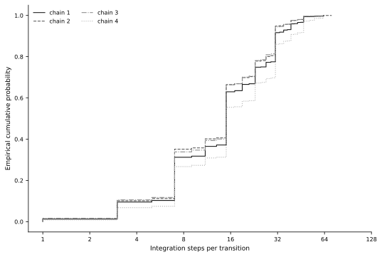
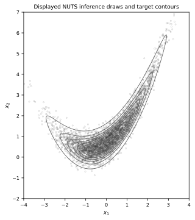

No-U-Turn Sampler with BlackJAX#
Fixed-path HMC requires a step size, a mass matrix, and a number of integration steps. NUTS keeps the gradient-based Hamiltonian proposal but chooses a trajectory length dynamically at each transition (Hoffman and Gelman, 2014). We keep the target from the two preceding sections fixed and use BlackJAX for window adaptation and NUTS transitions (Cabezas et al., 2024).
Banana-shaped target#
Let
and define
As in the random-walk and fixed-path HMC experiments, we take \(a=1.15\), \(b=0.5\), and \(\rho=0.9\) (Wang et al., 2019). The inverse map has unit Jacobian determinant, so the normalized target is \(\pi(x)=\phi_{\Sigma_\rho}(v(x))\), with
a = 1.15
b = 0.5
rho = 0.9
correlation = jnp.array([[1.0, rho], [rho, 1.0]])
def banana_logdensity(x):
# Log density induced by the unit-Jacobian banana transformation.
x1, x2 = x
u1 = x1 / a
u2 = a * (x2 - b * (u1**2 + a**2))
u = jnp.array([u1, u2])
return multivariate_normal.logpdf(u, jnp.zeros(2), correlation)
grid_x = jnp.linspace(-4.0, 4.0, 160)
grid_y = jnp.linspace(-2.0, 7.0, 180)
X_grid, Y_grid = jnp.meshgrid(grid_x, grid_y)
grid_points = jnp.stack([X_grid.ravel(), Y_grid.ravel()], axis=1)
target_density = jnp.exp(vmap(banana_logdensity)(grid_points)).reshape(X_grid.shape)
def draw_target_contours(ax):
maximum = float(jnp.max(target_density))
levels = np.linspace(0.04 * maximum, 0.92 * maximum, 9)
ax.contour(
np.asarray(X_grid),
np.asarray(Y_grid),
np.asarray(target_density),
levels=levels,
colors="0.35",
linewidths=0.8,
)
ax.set_xlim(-4.0, 4.0)
ax.set_ylim(-2.0, 7.0)
ax.set_aspect("equal")
ax.set_xlabel(r"$x_1$")
ax.set_ylabel(r"$x_2$")
finish_axes(ax, boxed=True)
return ax
fig, ax = plt.subplots(figsize=FIGURE_SIZES["half_tall"], constrained_layout=True)
draw_target_contours(ax)
ax.set_title("Banana-shaped target density");
{kind=link}

Fig. 17 Contours of the banana-shaped target shared by the random-walk, fixed-path HMC, and NUTS experiments.#
Dynamic trajectories#
NUTS grows a binary tree by extending a leapfrog trajectory in randomly chosen forward or backward directions. A valid progressive sampling rule selects the proposal from the constructed trajectory; a stopping test cannot simply be attached to ordinary HMC as a state-dependent path length. The original algorithm used recursive tree construction and slice-based selection. The BlackJAX implementation uses iterative expansion and multinomial progressive selection together with a generalized U-turn test (Betancourt, 2017; Cabezas et al., 2024; Hoffman and Gelman, 2014).
For a checked subtree \(\mathcal{T}\), let \(r^-\) and \(r^+\) be the endpoint momenta and define the adjusted accumulated momentum
The subtree is turning when
This discrete check is the implementation-level counterpart of the endpoint criterion introduced in the MCMC basics section. BlackJAX also checks completed subtrees and stops after at most max_num_doublings tree expansions. We use ten expansions, which caps a transition at \(2^{10}-1=1{,}023\) integration steps.
max_num_doublings = 10
divergence_threshold = 1_000.0
nuts_kernel = blackjax.nuts.build_kernel(
divergence_threshold=divergence_threshold
)
def run_nuts_chain(
key,
initial_state,
step_size,
inverse_mass_matrix,
num_draws,
):
def one_step(carry, _):
key, state = carry
key, transition_key = jrandom.split(key)
next_state, info = nuts_kernel(
transition_key,
state,
banana_logdensity,
step_size,
inverse_mass_matrix,
max_num_doublings=max_num_doublings,
)
initial_energy = -state.logdensity + 0.5 * jnp.sum(
inverse_mass_matrix * info.momentum**2
)
output = (
next_state.position,
info.acceptance_rate,
info.is_divergent,
info.num_trajectory_expansions,
info.num_integration_steps,
initial_energy,
)
return (key, next_state), output
(_, final_state), output = lax.scan(
one_step,
(key, initial_state),
None,
length=num_draws,
)
return final_state, output
Window adaptation and inference#
NUTS replaces the fixed integration-step count \(L\) with dynamic path termination. Practical use still requires choices of mass-matrix class, target acceptance probability, warmup length, and maximum tree depth. We use BlackJAX window adaptation to estimate a diagonal inverse mass matrix and a step size separately for each chain. Dual averaging targets a mean acceptance probability \(\delta=0.99\) (Cabezas et al., 2024; Hoffman and Gelman, 2014). This deliberately conservative target is specified before inference and favors smaller step sizes on the curved density.
The four chains start from the same dispersed positions as the preceding experiments. Each chain performs \(1{,}000\) adaptive warmup transitions. Its adapted step size and inverse mass matrix are then frozen, and every one of the following \(5{,}000\) states is retained for inference. Warmup draws are excluded from all posterior summaries.
initial_positions = jnp.array(
[
[-4.0, 1.0],
[-1.0, -1.0],
[1.0, 4.0],
[4.0, 6.0],
]
)
num_chains = initial_positions.shape[0]
num_warmup = 1_000
num_draws = 5_000
target_acceptance_rate = 0.99
warmup = blackjax.window_adaptation(
blackjax.nuts,
banana_logdensity,
is_mass_matrix_diagonal=True,
target_acceptance_rate=target_acceptance_rate,
max_num_doublings=max_num_doublings,
)
def run_warmup(key, initial_position):
return warmup.run(key, initial_position, num_warmup)
master_key = jrandom.PRNGKey(20260920)
warmup_key, inference_key = jrandom.split(master_key)
warmup_keys = jrandom.split(warmup_key, num_chains)
adaptation_results, warmup_info = jax.jit(vmap(run_warmup))(
warmup_keys,
initial_positions,
)
adapted_step_size = adaptation_results.parameters["step_size"]
adapted_inverse_mass_matrix = adaptation_results.parameters[
"inverse_mass_matrix"
]
inference_keys = jrandom.split(inference_key, num_chains)
_, inference_output = jax.jit(
vmap(run_nuts_chain, in_axes=(0, 0, 0, 0, None)),
static_argnums=(4,),
)(
inference_keys,
adaptation_results.state,
adapted_step_size,
adapted_inverse_mass_matrix,
num_draws,
)
(
samples,
inference_acceptance_probability,
inference_is_divergent,
inference_num_expansions,
inference_num_steps,
inference_initial_energy,
) = inference_output
samples.block_until_ready()
adaptation_rows = []
for chain in range(num_chains):
adaptation_rows.append(
[
str(chain + 1),
f"{float(adapted_step_size[chain]):.4f}",
f"{float(adapted_inverse_mass_matrix[chain, 0]):.4f}",
f"{float(adapted_inverse_mass_matrix[chain, 1]):.4f}",
]
)
adaptation_latex_rows = [" & ".join(row) + r" \\" for row in adaptation_rows]
adaptation_latex = r'''
\begin{tabular}{lrrr}
\hline
Chain & Step size & $(M^{-1})_{11}$ & $(M^{-1})_{22}$ \\
\hline
''' + "\n".join(adaptation_latex_rows) + r'''
\hline
\end{tabular}
'''
math_class = 'class="math notranslate nohighlight"'
display_book_table(
["Chain", "Step size", "inv. mass x1", "inv. mass x2"],
adaptation_rows,
adaptation_latex,
html_headers=[
"Chain",
"Step size",
f"<span {math_class}>\\((M^{{-1}})_{{11}}\\)</span>",
f"<span {math_class}>\\((M^{{-1}})_{{22}}\\)</span>",
],
)
| Chain | Step size | \((M^{-1})_{11}\) | \((M^{-1})_{22}\) |
|---|---|---|---|
| 1 | 0.1108 | 1.0265 | 0.7304 |
| 2 | 0.1114 | 1.1605 | 0.9700 |
| 3 | 0.1264 | 1.0171 | 0.6753 |
| 4 | 0.0874 | 1.2759 | 0.8612 |
The trace display includes the complete warmup and the first \(1{,}200\) inference draws. The vertical line marks the point at which adaptation ends and the transition parameters become fixed. Numerical summaries use all \(20{,}000\) post-warmup states.
warmup_samples = np.asarray(warmup_info.state.position)
trace_draws = 1_200
trace_values = np.concatenate(
[warmup_samples, np.asarray(samples[:, :trace_draws])],
axis=1,
)
trace_iteration = np.arange(-num_warmup + 1, trace_draws + 1)
fig, axes = plt.subplots(
2,
1,
sharex=True,
figsize=FIGURE_SIZES["full_standard"],
constrained_layout=True,
)
for chain in range(num_chains):
color, linestyle = CHAIN_STYLES[chain]
for coordinate, ax in enumerate(axes):
ax.plot(
trace_iteration,
trace_values[chain, :, coordinate],
color=color,
linestyle=linestyle,
linewidth=0.55,
rasterized=True,
label=f"chain {chain + 1}" if coordinate == 0 else None,
)
for coordinate, ax in enumerate(axes):
ax.axvline(0, color="black", linewidth=0.9)
ax.set_ylabel(fr"$x_{coordinate + 1}$")
axes[0].legend(ncol=4, loc="upper center")
axes[-1].set_xlabel("Iteration relative to the end of warmup")
finish_axes(axes);
{kind=link}

Fig. 18 Warmup and initial inference traces for four dispersed NUTS chains. The vertical line marks the end of adaptation.#
Multiple-chain and NUTS diagnostics#
We compute rank-normalized split and folded \(\widehat R\), together with bulk and tail effective sample sizes, from the complete post-warmup arrays (Vehtari et al., 2021). The NUTS transition information supplies the mean acceptance probability across each constructed trajectory, divergent-transition flags, the number of tree expansions, and the number of integration steps.
When num_trajectory_expansions equals ten, a transition has reached the configured depth cap. Depth-cap events primarily warn about efficiency; divergences can signal unreliable numerical trajectories. We also compute E-BFMI from the initial Hamiltonian after each momentum refresh, using the definition in the fixed-path HMC section (Betancourt, 2017). These checks diagnose different failure modes, and none establishes convergence by itself.
rhat = np.asarray(blackjax.rhat(samples))
bulk_ess = np.asarray(blackjax.ess_bulk(samples))
tail_ess = np.asarray(blackjax.ess_tail(samples))
diagnostic_rows = [
["Rank-normalized split/folded R-hat", f"{rhat[0]:.4f}", f"{rhat[1]:.4f}"],
["Bulk ESS", f"{bulk_ess[0]:.0f}", f"{bulk_ess[1]:.0f}"],
["Tail ESS", f"{tail_ess[0]:.0f}", f"{tail_ess[1]:.0f}"],
]
diagnostic_latex = rf'''
\begin{{tabular}}{{lrr}}
\hline
Quantity & $x_1$ & $x_2$ \\
\hline
Rank-normalized split/folded $\widehat R$ & {rhat[0]:.4f} & {rhat[1]:.4f} \\
Bulk ESS & {bulk_ess[0]:.0f} & {bulk_ess[1]:.0f} \\
Tail ESS & {tail_ess[0]:.0f} & {tail_ess[1]:.0f} \\
\hline
\end{{tabular}}
'''
diagnostic_html_rows = [
[
f"Rank-normalized split/folded <span {math_class}>\\(\\widehat R\\)</span>",
diagnostic_rows[0][1],
diagnostic_rows[0][2],
],
diagnostic_rows[1],
diagnostic_rows[2],
]
display_book_table(
["Quantity", "x1", "x2"],
diagnostic_rows,
diagnostic_latex,
html_headers=[
"Quantity",
f"<span {math_class}>\\(x_1\\)</span>",
f"<span {math_class}>\\(x_2\\)</span>",
],
html_rows=diagnostic_html_rows,
)
acceptance_probability = np.asarray(inference_acceptance_probability)
divergences = np.asarray(inference_is_divergent)
num_expansions = np.asarray(inference_num_expansions)
num_steps = np.asarray(inference_num_steps)
energy_values = np.asarray(inference_initial_energy)
mean_acceptance_probability = acceptance_probability.mean(axis=1)
divergence_count = divergences.sum(axis=1)
depth_cap_count = (num_expansions == max_num_doublings).sum(axis=1)
mean_num_steps = num_steps.mean(axis=1)
percentile_90_num_steps = np.percentile(num_steps, 90, axis=1)
e_bfmi = np.mean(np.diff(energy_values, axis=1) ** 2, axis=1) / np.var(
energy_values,
axis=1,
)
nuts_rows = []
for chain in range(num_chains):
nuts_rows.append(
[
str(chain + 1),
f"{mean_acceptance_probability[chain]:.3f}",
str(int(divergence_count[chain])),
str(int(depth_cap_count[chain])),
f"{mean_num_steps[chain]:.1f}",
f"{percentile_90_num_steps[chain]:.0f}",
f"{e_bfmi[chain]:.3f}",
]
)
nuts_latex_rows = [" & ".join(row) + r" \\" for row in nuts_rows]
nuts_latex = r'''
\begin{tabular}{lrrrrrr}
\hline
Chain & Mean accept. & Div. & Depth cap & Mean steps & 90\% steps & E-BFMI \\
\hline
''' + "\n".join(nuts_latex_rows) + r'''
\hline
\end{tabular}
'''
display_book_table(
[
"Chain",
"Mean accept.",
"Div.",
"Depth cap",
"Mean steps",
"90% steps",
"E-BFMI",
],
nuts_rows,
nuts_latex,
)
| Quantity | \(x_1\) | \(x_2\) |
|---|---|---|
| Rank-normalized split/folded \(\widehat R\) | 1.0020 | 1.0012 |
| Bulk ESS | 1882 | 2713 |
| Tail ESS | 2274 | 2199 |
| Chain | Mean accept. | Div. | Depth cap | Mean steps | 90% steps | E-BFMI |
|---|---|---|---|---|---|---|
| 1 | 0.988 | 0 | 0 | 17.5 | 31 | 0.949 |
| 2 | 0.986 | 0 | 0 | 16.3 | 31 | 0.992 |
| 3 | 0.985 | 0 | 0 | 16.3 | 31 | 0.989 |
| 4 | 0.991 | 0 | 0 | 20.4 | 39 | 1.034 |
Pooled-rank histograms complement the numerical summaries. Chains exploring the same distribution should contribute comparably throughout the pooled ranks; exact uniformity is neither expected nor required.
num_rank_bins = 20
fig, axes = plt.subplots(
1,
2,
figsize=FIGURE_SIZES["full_standard"],
constrained_layout=True,
)
for coordinate, ax in enumerate(axes):
pooled = np.asarray(samples[:, :, coordinate])
ranks = rankdata(pooled.ravel(), method="average").reshape(pooled.shape)
bin_edges = np.linspace(0.5, ranks.size + 0.5, num_rank_bins + 1)
bin_centers = 0.5 * (bin_edges[:-1] + bin_edges[1:])
for chain in range(num_chains):
color, linestyle = CHAIN_STYLES[chain]
counts, _ = np.histogram(ranks[chain], bins=bin_edges)
ax.step(
bin_centers,
counts,
where="mid",
color=color,
linestyle=linestyle,
label=f"chain {chain + 1}",
)
ax.axhline(num_draws / num_rank_bins, color="0.75", linewidth=0.8)
ax.set_title(fr"Ranks for $x_{coordinate + 1}$")
ax.set_xlabel("Pooled rank")
ax.set_ylabel("Count")
axes[0].legend(ncol=2)
finish_axes(axes);
{kind=link}

Fig. 19 Pooled-rank histograms for the four NUTS inference chains. Comparable contributions support, but do not prove, chain agreement.#
Variable computational work#
NUTS replaces the fixed HMC path length with variable work at each transition. The integration-step count is therefore both an algorithm diagnostic and a first approximation to gradient cost. The empirical distribution below uses every inference transition. It is not an efficiency comparison with the preceding HMC run because the runs contain different numbers of retained states and omit a common wall-time protocol.
fig, ax = plt.subplots(
figsize=FIGURE_SIZES["full_standard"],
constrained_layout=True,
)
for chain in range(num_chains):
color, linestyle = CHAIN_STYLES[chain]
ordered_steps = np.sort(num_steps[chain])
probability = np.arange(1, num_draws + 1) / num_draws
ax.step(
ordered_steps,
probability,
where="post",
color=color,
linestyle=linestyle,
label=f"chain {chain + 1}",
)
ax.set_xscale("log", base=2)
ax.set_xticks([1, 2, 4, 8, 16, 32, 64, 128])
ax.xaxis.set_major_formatter(mticker.ScalarFormatter())
ax.set_xlabel("Integration steps per transition")
ax.set_ylabel("Empirical cumulative probability")
ax.legend(ncol=2)
finish_axes(ax);
{kind=link}

Fig. 20 Empirical distributions of NUTS integration-step counts. Variable trajectory lengths replace the fixed integration-step count of HMC.#
Monte Carlo precision and an exact check#
The transformation gives
Consequently,
For each scalar estimand \(g(X)\), we report
Here \(\bar g\) averages all retained chains and draws, and \(N_{\mathrm{eff},g}\) is the estimand-specific effective sample size.
moment_draws = jnp.stack(
[
samples[..., 0],
samples[..., 1],
samples[..., 0] ** 2,
samples[..., 0] * samples[..., 1],
samples[..., 1] ** 2,
],
axis=-1,
)
exact_moments = np.array(
[
0.0,
b * (1.0 + a**2),
a**2,
rho,
a ** (-2) + 2.0 * b**2 + b**2 * (1.0 + a**2) ** 2,
]
)
moment_names = [
"E[X1]",
"E[X2]",
"E[X1^2]",
"E[X1 X2]",
"E[X2^2]",
]
moment_names_latex = [
r"$\mathbb{E}[X_1]$",
r"$\mathbb{E}[X_2]$",
r"$\mathbb{E}[X_1^2]$",
r"$\mathbb{E}[X_1X_2]$",
r"$\mathbb{E}[X_2^2]$",
]
moment_names_html = [
f"<span {math_class}>\\(\\mathbb{{E}}[X_1]\\)</span>",
f"<span {math_class}>\\(\\mathbb{{E}}[X_2]\\)</span>",
f"<span {math_class}>\\(\\mathbb{{E}}[X_1^2]\\)</span>",
f"<span {math_class}>\\(\\mathbb{{E}}[X_1X_2]\\)</span>",
f"<span {math_class}>\\(\\mathbb{{E}}[X_2^2]\\)</span>",
]
moment_estimates = np.asarray(moment_draws.mean(axis=(0, 1)))
moment_ess = np.asarray(blackjax.ess(moment_draws))
moment_rhat = np.asarray(blackjax.rhat(moment_draws))
moment_variances = np.asarray(moment_draws).reshape(-1, len(moment_names)).var(
axis=0,
ddof=1,
)
moment_mcse = np.sqrt(moment_variances / moment_ess)
moment_rows = []
for name, exact, estimate, mcse, value_rhat, value_ess in zip(
moment_names,
exact_moments,
moment_estimates,
moment_mcse,
moment_rhat,
moment_ess,
):
moment_rows.append(
[
name,
f"{exact:.4f}",
f"{estimate:.4f}",
f"{mcse:.4f}",
f"{value_rhat:.4f}",
f"{value_ess:.0f}",
]
)
moment_latex_rows = []
for name, row in zip(moment_names_latex, moment_rows):
moment_latex_rows.append(name + " & " + " & ".join(row[1:]) + r" \\")
moment_latex = r'''
\begin{tabular}{lrrrrr}
\hline
Estimand & Exact & Estimate & MCSE & $\widehat R$ & ESS for $\bar g$ \\
\hline
''' + "\n".join(moment_latex_rows) + r'''
\hline
\end{tabular}
'''
moment_html_rows = [
[html_name] + row[1:]
for html_name, row in zip(moment_names_html, moment_rows)
]
display_book_table(
["Estimand", "Exact", "Estimate", "MCSE", "R-hat", "ESS for mean"],
moment_rows,
moment_latex,
html_headers=[
"Estimand",
"Exact",
"Estimate",
"MCSE",
f"<span {math_class}>\\(\\widehat R\\)</span>",
f"ESS for <span {math_class}>\\(\\bar g\\)</span>",
],
html_rows=moment_html_rows,
)
| Estimand | Exact | Estimate | MCSE | \(\widehat R\) | ESS for \(\bar g\) |
|---|---|---|---|---|---|
| \(\mathbb{E}[X_1]\) | 0.0000 | 0.0396 | 0.0270 | 1.0020 | 1860 |
| \(\mathbb{E}[X_2]\) | 1.1612 | 1.1970 | 0.0271 | 1.0012 | 1871 |
| \(\mathbb{E}[X_1^2]\) | 1.3225 | 1.3573 | 0.0399 | 1.0007 | 2300 |
| \(\mathbb{E}[X_1X_2]\) | 0.9000 | 1.0243 | 0.0851 | 1.0018 | 1498 |
| \(\mathbb{E}[X_2^2]\) | 2.6046 | 2.8088 | 0.1512 | 1.0012 | 1580 |
Every inference state remains in the diagnostic and moment calculations. Effective sample size measures the precision loss or gain induced by serial dependence; it does not prescribe a thinning interval. Routine thinning would discard information unless storage or downstream processing is the limiting cost (Link and Eaton, 2012).
The final figure displays every fifth state to control overplotting. This is display subsampling only; the numerical results use the complete inference array.
display_stride = 5
display_samples = np.asarray(samples[:, ::display_stride]).reshape(-1, 2)
fig, ax = plt.subplots(figsize=FIGURE_SIZES["full_standard"], constrained_layout=True)
draw_target_contours(ax)
ax.scatter(
display_samples[:, 0],
display_samples[:, 1],
s=5,
facecolors="none",
edgecolors="0.10",
linewidths=0.35,
alpha=0.35,
rasterized=True,
)
ax.set_title("Displayed NUTS inference draws and target contours");
{kind=link}

Fig. 21 A display subset of NUTS inference draws over the target contours. All retained draws enter the numerical summaries.#
Diagnostic interpretation#
For this stored run, the coordinate and moment \(\widehat R\) values satisfy the \(1.01\) warning screen, the rank plots show no clear chain separation, no post-warmup transition is divergent, no transition reaches the maximum tree depth, and the E-BFMI values reveal no evident energy-exploration warning. The exact moments agree with the estimates at the scale indicated by their MCSEs. These results reveal no detected failure; they do not prove convergence.
The conservative target acceptance probability produces high acceptance probabilities and variable trajectories that typically require more than the ten integration steps used by the preceding fixed-path HMC run. Compare the algorithms using ESS per gradient evaluation or per second, or compare MCSE at a matched gradient-evaluation or wall-time budget. ESS per retained state alone is not a computational-efficiency comparison.
NUTS completes the progression from random-walk Metropolis to fixed-path HMC and then to dynamic Hamiltonian trajectories. The next section changes the computational strategy: variational inference replaces sampling from the target with optimization over a tractable family of approximate distributions.
Exercises#
In a warmup-only pilot, compare target acceptance probabilities \(0.8\), \(0.9\), and \(0.99\). Freeze the selected setting before generating fresh inference draws, then compare divergences, integration-step counts, and MCSE.
Replace diagonal mass-matrix adaptation with dense adaptation. Compare the adapted matrices and cost-normalized precision.
Reduce
max_num_doublingsfrom ten to six. Count depth-cap events and explain why the cap is primarily an efficiency diagnostic.Compare fixed-path HMC and NUTS using ESS per integration step and ESS per unit wall time. Alternatively, compare MCSE at matched integration-step and wall-time budgets. Separate compilation time from sampling time.
Recreate the final scatter plot with a different display stride and verify that the numerical summaries remain unchanged.